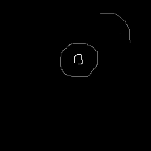
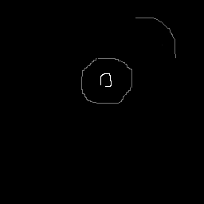

Grow Cut is a simple and powerful segmentation technique. The algorithm takes two inputs: an intensity image and an initial set of seeds or strokes from the user depicting the foreground and background. The algorithm is iterative and needs to maintain two intermediate images: a strength image and the current labeling. Here, we pack the two intermediate images into a single texture using different color channels for each intermediate image.
The managment of multiple input textures is based on this work.
 

Move pointer over the lower image. To the left of the mouse, the original intensity image is displayed with the pixels under the foreground segmentation recolored. To the right of the mouse, the segmentation or pixel labeling is displayed.
Check out the source code.
This demo uses WebGL. Not all devices and browsers are supported.